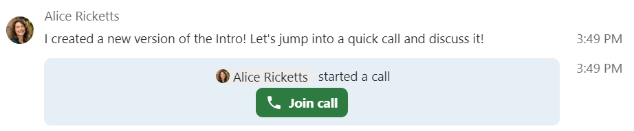

Присоединиться к звонку или чату в качестве гостя
Nextcloud Talk предлагает аудио/видео звонки и текстовые чаты, интегрированные в Nextcloud. Он предоставляет веб-интерфейс и мобильное приложение.
Вы можете узнать больше о Nextcloud Talk на нашем веб-сайте <https://nextcloud.com/talk/>`_.
Присоединение к чату
If you received a link to a chat conversation, you can open it in your browser to join the chat. Here, you will be prompted to enter your name before joining.

You can also change your name later by clicking the Edit button, located top-right.

Настройки камеры и микрофона можно найти в меню «Настройки». Там вы также можете найти список ярлыков, которые вы можете использовать.

Присоединиться к звонку
Вы можете начать звонок в любое время с помощью кнопки «Начать звонок». Другие участники получат уведомление и смогут присоединиться к вызову. Если кто-то уже начал вызов, кнопка изменится на зеленую кнопку «Присоединиться к звонку».
{kind=link}
Перед присоединением к звонку, вы увидите проверку устройства, где можете выбрать камеру и микрофон, включить размытие фона или даже присоединиться к любому устройству.

Во время звонка вы можете найти настройки камеры и микрофона в меню ... верхней панели.

Во время звонка вы можете отключить микрофон и выключить видео с помощью кнопок на видео вверху справа или с помощью сочетаний клавиш M для отключения звука и V для отключения видео. Вы также можете использовать пробел для отключения звука. Если вы отключили звук, нажатие пробела включит звук, и вы сможете говорить, пока не отпустите пробел. Если вы включили звук, нажатие пробела отключит звук, пока вы не отпустите пробел.
Вы можете скрыть видео (полезно при совместном использовании экрана) с помощью маленькой стрелки, расположенной над видеопотоком. Включите видео обратно с помощью маленькой стрелки.
Больше настроек
В меню разговора вы можете перейти в полноэкранный режим. Вы также можете сделать это с помощью клавиши «F» на клавиатуре. В настройках беседы вы можете найти варианты уведомлений и полное описание беседы.